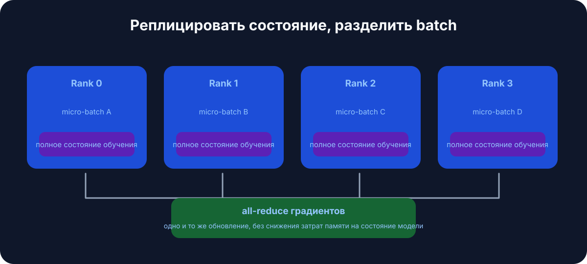
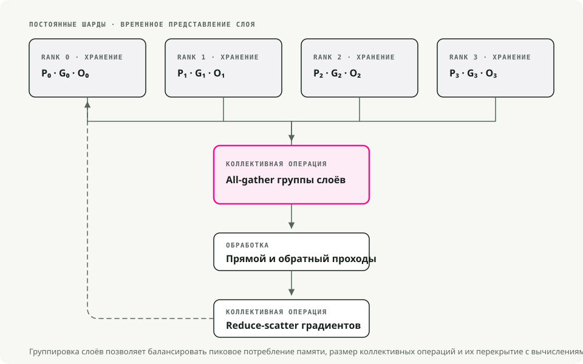
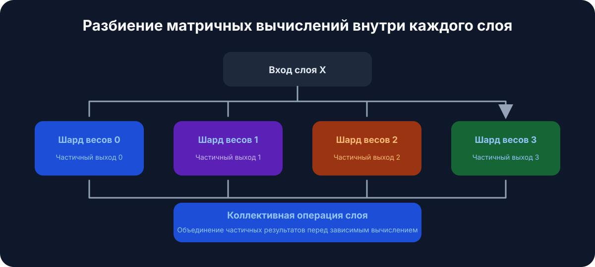
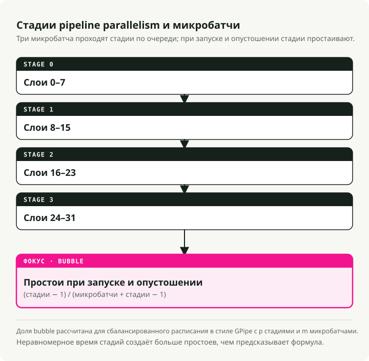
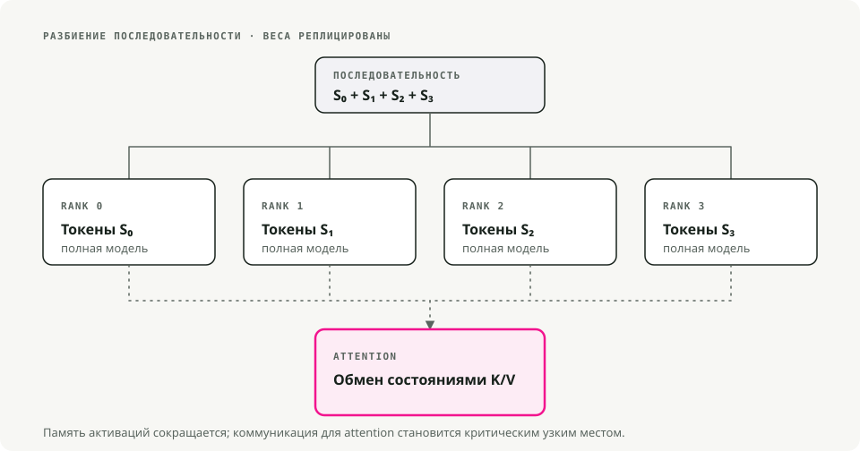
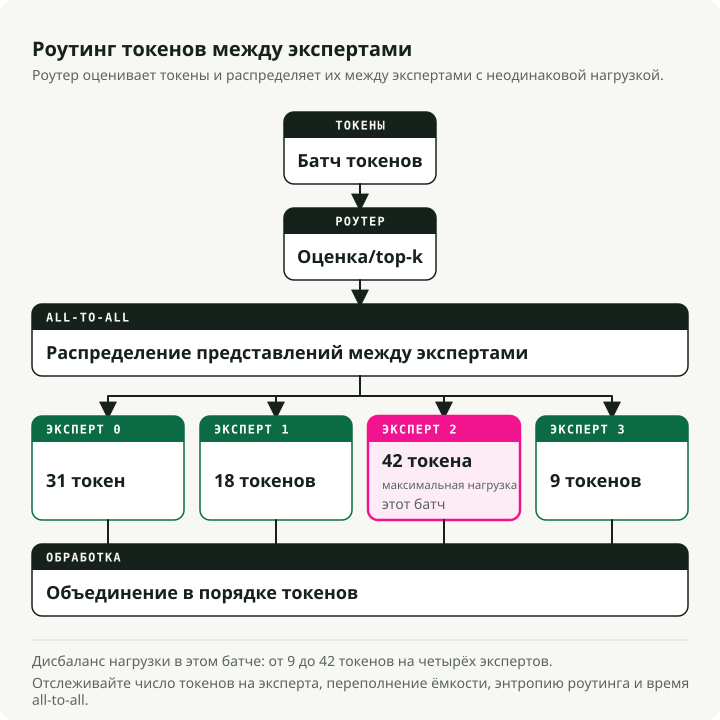
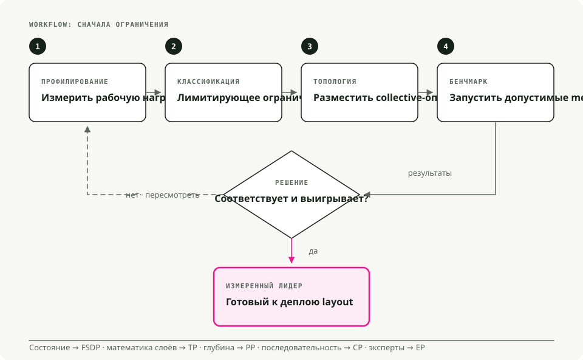

Автоматический перевод
Эта статья была автоматически переведена с оригинальной английской версии.
Масштабирование крупных языковых моделей: стратегии с использованием нескольких GPU и нескольких узлов, эффективно работающие в реальных условиях
Современные LLM не помещаются на один GPU. Модель с 70 миллиардами параметров требует примерно 140 ГБ только для весов в формате FP16, что почти в два раза превышает объём памяти одного устройства A100. Для обучения или предоставления таких моделей необходимо распределять вычисления между несколькими GPU, и неправильное распределение приведёт к потере большей части выделенных ресурсов.
В данном материале приводится практический обзор стратегий параллелизма, которые действительно эффективны в производственной среде, основанный на опыте Hugging Face Практическое руководство по ультраскейл-решениям.
Кратко: Масштабирование больших языковых моделей — это прежде всего проблема памяти, пропускной способности и коммуникации, а не алгоритма. Начните с параллелизма данных, переходите к технологиям вроде FSDP/ZeRO, когда состояния модели становятся слишком объемными, добавляйте параллелизм тензоров или потоков, если одна видеокарта не может эффективно хранить или обрабатывать модель, а MoE следует использовать только тогда, когда сложность обслуживания и маршрутизации оправдана.
Предварительные требования
Вы получите наибольшую пользу от этого материала, если уже владеете:
- Принципами обратного распространения ошибки, градиентами и оптимизаторами вроде AdamW.
- Механизмами трансформеров: механизмом внимания и сетями передачи данных.
- Основами PyTorch:
nn.Module,DataLoader, стандартный цикл обучения.
Почему важна масштабируемость
Четыре фактора препятствуют использованию одной видеокарты для обработки данных. Модель размером 70 миллиардов параметров требует примерно 140 ГБ памяти в формате FP16, что почти в два раза больше, чем 80 ГБ у карты A100. Даже при использовании восьми карт A100 обучение модели размером 13 миллиардов параметров с нуля занимает недели. Длинные контексты (32 К токенов и более) быстро исчерпывают объем памяти одной карты ещё до начала реальной обработки данных. При высокой нагрузке именно распределенная инференс позволяет контролировать задержки в работе системы.
1. Техники параллелизма в простых терминах
1.1 Параллелизм по данным (Data Parallelism, DP)
Самый простой способ разделения работы. Каждая видеокарта хранит полную модель и обрабатывает отдельный фрагмент набора данных. После обратного распространения ошибок все карты суммируют свои градиенты (средневзвешивают их), после чего каждая обновляет свою копию модели. Модели одинаковы, данные разные, веса синхронизированы.
Этот подход подходит, когда модель помещается в память одной карты, и цель — увеличить скорость обработки большего количества наборов данных в секунду. Затраты на настройку минимальны; в PyTorch для этого достаточно одной строки кода с использованием DDP. Однако здесь возникает проблема с памятью: каждая карта по-прежнему должна хранить полную модель, состояния оптимизатора и градиенты, поэтому такой подход повышает пропускную способность, а не объем памяти.

Инструменты: PyTorch DDP, Horovod### 1.2 Полностью шардированная параллельность на уровне данных (FSDP)
Вариант DP с учётом ограничений памяти. Параметры, градиенты и состояния оптимизатора делятся между GPU. Во время прохождения входных данных каждый GPU собирает необходимые ему параметры с других устройств, выполняет вычисления, а затем удаляет заимствованные данные, чтобы освободить память. Во время обратного прохода снова происходит сбор данных, после чего градиенты суммируются таким образом, что каждый GPU обновляет только свой собственный шард.
Это тот уровень оптимизации, к которому обращаются, когда модель становится слишком большой для одной видеокарты (обычно при количестве параметров свыше ~10 млрд) и требуется продолжить обучение на одном устройстве без необходимости переписывать код. На практике FSDP позволяет обучать модели, размер которых в 4–8 раз превышает объем памяти одной видеокарты.

[!NOTE] Этапы ZeRO, кратко FSDP часто описывается с использованием понятий ZeRO (Zero Redundancy Optimizer):
- Этап 1: оптимизаторы состояний делятся только между гранулами (~4-кратная экономия памяти).
- Этап 2: градиенты и оптимизаторы состояний делятся между гранулами (~8-кратная экономия памяти).
- Этап 3: параметры, градиенты и оптимизаторы состояний делятся между гранулами (линейное масштабирование с увеличением количества GPU).
По умолчанию PyTorch FSDP работает в режиме Этапа 3.
Включение FSDP в PyTorch
from torch.distributed.fsdp import FullyShardedDataParallel as FSDP
# 1. Wrap your model
model = MyLLM()
model = FSDP(model)
# 2. Train as usual
output = model(input)
loss = output.sum()
loss.backward()
optimizer.step()
Инструменты: PyTorch FSDP, DeepSpeed ZeRO-3### 1.3 Параллелизм тензоров (TP)
Разделение отдельных слоев между GPU. Берётся матрица весов, она делятся по столбцам (или по строкам), причём каждому GPU передаётся свой фрагмент. Каждое устройство вычисляет свою часть результата; затем с помощью операции all-reduce или конкатенации результаты снова объединяются перед обработкой следующего слоя. Этот процесс происходит на каждом слое.
Параллелизм тензоров оправдывает себя тогда, когда отдельные слои остаются слишком большими даже после применения технологии FSDP — например, из-за огромных матриц внимания или широких архитектур FFN. Кроме того, он предполагает быстрое внутреннее соединение между ядрами: NVLink или NVSwitch, а не PCIe. Между разными узлами операция all-reduce для каждого слоя становится узким местом, и преимущества такого подхода исчезают. Типично эффективным значением степени параллелизма тензоров в пределах одной машины является значение от 2 до 8.

Инструменты: Megatron-LM, TensorRT-LLM, ColossalAI### 1.4 Параллелизм в конвейере (PP)
Модель делят вертикально по группам слоев. Слои с 1 по 10 находятся на GPU 1, слои с 11 по 20 — на GPU 2 и так далее. Затем через конвейер отправляют микропакеты данных, чтобы каждый этап оставался загруженным: GPU 1 обрабатывает пакет №1 и передаёт его GPU 2, после чего сразу приступает к обработке пакета №2. При наличии достаточного количества микропакетов в работе каждое устройство постоянно выполняет какие-либо операции.
К использованию подхода PP следует прибегать тогда, когда модель настолько глубока, что даже технология FSDP не позволяет её разместить, или когда необходимо распределить вычисления между несколькими узлами, причём ограничивающим фактором является пропускная способность между ними. Проблемой может стать возникновение «пузырей» в конвейере — периодов бездействия на начале и в конце каждого пакета; их можно снизить путём использования большого количества небольших микропакетов вместо нескольких крупных.

Инструменты: DeepSpeed PP, Megatron-LM, GPipe### 1.5 Параллелизм контекста (Context Parallelism, CP)
Для очень длинных последовательностей. Контекст объемом 64 килотокенов делят, скажем, между четырьмя GPU (по 16 килотокенов на каждый). Каждый GPU выполняет операцию самонаправленного внимания над своим локальным фрагментом, после чего GPU обмениваются ключами и значениями для вычисления компонентов внимания между фрагментами. Результат объединения соответствует тому, что получилось бы при обработке всего контекста на одном устройстве, но без значительных затрат на память.
Именно этот подход применяют тогда, когда бутылочным горлышком является длина контекста, а не размер модели: анализ длинных документов, рассуждения объемом с книгу, генерация кода из больших репозиториев. Благодаря CP становится возможной обучающая процесс с контекстом объемом 100 килотокенов и более на оборудовании, которое в противном случае справлялось бы только с объемом до 8 килотокенов.

Инструменты: Пикотрон, Нанотрон### 1.6 Экспертный параллелизм (смешение экспертов)
Специализация. Вместо плотных слоев FFN используются N подсетей-экспертов (8, 64 или даже больше). Небольшая сеть управления выбирает топ-k экспертов (обычно топ-2) для каждого токена. Для обработки данного токена запускаются только эти эксперты; остальные находятся в состоянии покоя. Разные эксперты могут располагаться на разных GPU, что позволяет модели иметь огромное количество параметров в целом, при этом вычислительная нагрузка на обработку одного токена остается низкой.
Модель Mixtral-8x7B содержит 56 миллиардов параметров в общей сложности, но при обработке одного токена активно используется лишь около 13 миллиардов из них; модели Grok и DeepSeek-V2 также применяют этот подход. Однако это сопряжено с повышенной сложностью на этапе обучения: балансировка нагрузки между экспертами сама по себе представляет собой серьезную инженерную задачу, а нестабильность маршрутизации приводила к тому, что несколько попыток работы в режиме MoE заканчивались сходом.

Инструменты: Пикотрон, Нанотрон.
Краткое сравнение: какой вид параллелизма следует использовать?
| Техника | Что он разделяет | Лучше всего подходит для | Экономия памяти | Стоимость передачи данных |
|---|---|---|---|---|
| Параллелизм данных (DP) | Пакеты данных | Модели, которые помещаются на одной GPU | Нет (копирует модель) | Низкий (только градиенты) |
| FSDP | Модель + оптимизатор + градиенты | Модели слишком большие для одной GPU | Средний | |
| Параллелизм тензоров (TP) | Отдельные слои | Огромные слои, высокоскоростные GPU | Средний | Высокий (по слою) |
| Параллелизм в потоках обработки (Pipeline Parallelism, PP) | Группы слоёв (этапы) | Очень глубокие модели | Средний | Низкий (между стадиями) |
| Параллелизм контекста (CP) | Длина последовательности | Длинные контексты (64 К+ токенов) | Высокий (для активаций) | Средний |
| Экспертный параллелизм (MoE) | Эксперты по слоям MoE | Огромные разреженные модели | Средний |
Разумный стандартный вариант: начинать с FSDP. Добавлять TP тогда, когда размер отдельных слоев всё ещё слишком велик. Добавлять PP при необходимости распределения работы между несколькими узлами. Добавлять CP, когда ограничением становится длина контекста.
2. Стратегии практической подготовки
Различная форм-фактора оборудования требует разных комбинаций инструментов. Ниже приведён пример того, что я бы на самом деле использовал в трёх наиболее распространённых сценариях.
2.1 Одна машина, 2–8 GPU
Сначала следует применять чистый FSDP — PyTorch FSDP или DeepSpeed ZeRO-2/ZeRO-3 — с использованием библиотеки Hugging Face. accelerate или torchrun. Если после шардинга отдельные слои с вниманием к элементам или слои FFN всё ещё слишком велики, используйте режим TP=2.
Несколько замечаний, связанных с архитектурой оборудования. Графические процессоры для потребительских устройств (RTX 4090 и аналоги) через интерфейс PCIe должны работать в режиме TP=1 или максимум TP=2; их внутренняя сеть не способна обрабатывать более высокие значения. Серверные графические процессоры (A100, H100) с технологией NVLink без проблем справляются с режимами от TP=2 до TP=4. А при использовании восьми графических процессоров в одном корпусе технология FSDP позволяет обрабатывать модели объёмом до 70 миллиардов параметров без какого-либо использования режима TP.
2.2 Небольшой кластер, 2–16 узлов (≤128 графических процессоров)
Для достижения 2D- или 3D-параллелизма необходимо сочетание режима TP с технологией FSDP; по желанию можно добавить также технологию PP. Практически эффективная структура включает:
- Режим TP внутри каждого узла (TP=4 или TP=8 при наличии NVLink).
- Использование FSDP между узлами для реализации параллелизма данных.
- Добавление технологии PP, если модель настолько глубока, что даже FSDP не позволяет её обработать, в этом случае происходит вертикальное разделение модели между узлами.
Эта структура эффективна потому, что NVLink обеспечивает достаточную скорость для обмена данными между слоями в рамках режима TP, тогда как сеть InfiniBand между узлами нужна лишь для синхронизации фрагментов модели, обрабатываемых с помощью FSDP, что является значительно более экономичным видом коммуникации. В результате минимизируется нагрузка на пропускную способность между узлами, которая практически всегда является узким местом на таком уровне масштабирования.
При добавлении технологии PP количество микропакетов следует устанавливать не
Именно здесь 4D-параллелизм (DP × TP × PP × CP) начинает проявлять свою целесообразность. Сопоставьте каждое измерение с архитектурой вашего оборудования и воспользуйтесь Megatron-LM или Nanotron — они поддерживают 4D-параллелизм из коробки, тогда как разработка собственных решений требует значительных усилий.
На практике такая конфигурация нужна лишь при первоначальной настройке моделей объемом 70 миллиардов параметров с окнами контекста более 32 тысяч элементов. Для большинства задач финальной настройки, даже для крупных моделей, это не требуется.
Вот конкретный пример: обучение модели объемом 70 миллиардов параметров с окном контекста 32 тысячи элементов на 512 GPU:
- TP=8 в каждом узле из 8 GPU;
- PP=4 — между четырьмя узлами;
- CP=4 — для обработки длинного контекста;
- DP=4 — для повышения пропускной способности;
- 8 × 4 × 4 × 4 = 512 GPU.
Эффективность использования ресурсов в такой конфигурации составляет примерно 70–80% при наличии качественной сети InfiniBand; при тщательной настройке ее можно довести до ~85%. Любые показатели ниже этого уровня означают потерю значительных финансовых ресурсов.
3. Инструменты, которые стоит освоить
Краткий справочник для выбора подходящего инструмента:
| Инструмент | Когда использовать | Кривая обучения | Лучший вариант для |
|---|---|---|---|
| Hugging Face Accelerate | Любая распределённая обучающая схема с минимальными изменениями в коде | ★☆☆☆☆ | Новички: быстрая разработка прототипов |
| PyTorch FSDP | Модели среднего и крупного размера (1–30 млрд параметров) на одном узле | ★★☆☆☆ | Обычный случай |
| DeepSpeed ZeRO | Обучение на нескольких узлах с качественной документацией | ★★★☆☆ | Обучение в производственной среде |
| Megatron-LM | Очень крупные модели (70 млрд+ параметров), параллелизм в 3D/4D | ★★★★☆ | Производство в крупном масштабе |
| Nanotron | Обучение и исследования в области современного параллелизма | ★★★☆☆ | Образование, экспериментирование |
| vLLM | Быстрая инференс-обработка благодаря PagedAttention и кэшированию KV-пар | ★★☆☆☆ | Работа в продакшене |
| TensorRT-LLM | Максимальная скорость инференса на GPU NVIDIA | ★★★★☆ | Оптимизация процесса инференса в продакшене |
Минимальная версия accelerate Конфигурация FSDP
compute_environment: LOCAL_MACHINE
distributed_type: FSDP
fsdp_config:
fsdp_auto_wrap_policy: TRANSFORMER_BASED_WRAP
fsdp_backward_prefetch: BACKWARD_PRE
fsdp_state_dict_type: SHARDED_STATE_DICT
machine_rank: 0
main_process_ip: null
main_process_port: null
main_training_function: main
mixed_precision: bf16
num_machines: 1
num_processes: 8
use_cpu: false
Если вы только начинаете, рекомендуется воспользоваться инструментом Hugging Face Accelerate для запуска первых проектов, а затем перейти к использованию PyTorch FSDP или DeepSpeed, когда потребуется более тонкий контроль над процессом.

На рисунке выше показано то, что я бы использовал на практике: сначала FSDP, затем TP при слишком больших слоях, PP для многокластерной глубины, CP для длинного контекста. Сложные решения следует применять только тогда, когда более простые подходы действительно исчерпали свои возможности.
5. Краткий справочник по ультра-масштабным решениям
Команда Hugging Face подготовила одностраничный визуальный обзор, охватывающий большую часть вышеописанного:

Заключение
FSDP позволяет справляться с большинством ситуаций, с которыми вы можете столкнуться. TP используется тогда, когда отдельные слои всё ещё не помещаются в один узел. PP распределяет модель по нескольким узлам при ограничении, связанном с глубиной структуры. CP применяется, когда длина контекста становится причиной нехватки памяти. Основной принцип, соблюдаемый во всех этих подходах, заключается в соответствии стратегии параллелизма реальной архитектуре оборудования, а добавление нового измерения происходит только после того, как более простые варианты уже исчерпаны.
Дополнительная литература:
-
Руководство по работе с сверхмасштабными системами Hugging Face — интерактивное руководство, на котором основана эта статья. Учебник по FSDP в PyTorch — официальное руководство для начинающих. Учебные материалы DeepSpeed — полная документация DeepSpeed.
-
Параллелизм по данным представляет собой самую простую базовую модель, однако при её использовании состояние модели копируется на каждую GPU.
- Технологии FSDP и ZeRO снижают нагрузку на память путём разбиения параметров, градиентов и состояния оптимизатора на части.
- Параллелизм по тензорам и по потокам устраняет разные узкие места: проблемы, связанные с математическими операциями между слоями, и проблемы, связанные с расположением слоев.
- Параллелизм по контексту становится важным, когда ограничивающим фактором является длина последовательности, а не количество параметров.
- Технология Mixture-of-Experts повышает эффективность вычислений на каждый токен, но затрудняет процессы маршрутизации, балансировки нагрузки и обслуживания. Документация PyTorch FSDP - полностью шардированная обучающая схема с параллельным обработкой данных. Статья DeepSpeed ZeRO - разделение оптимизатора и состояния модели. Статья Megatron-LM - параллелизм модели по тензорам. Статья GPipe - параллельное обучение с использованием потоковой архитектуры. Статья «Switch Transformers» - редкие модели экспертов.